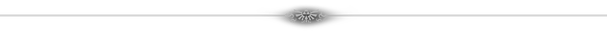
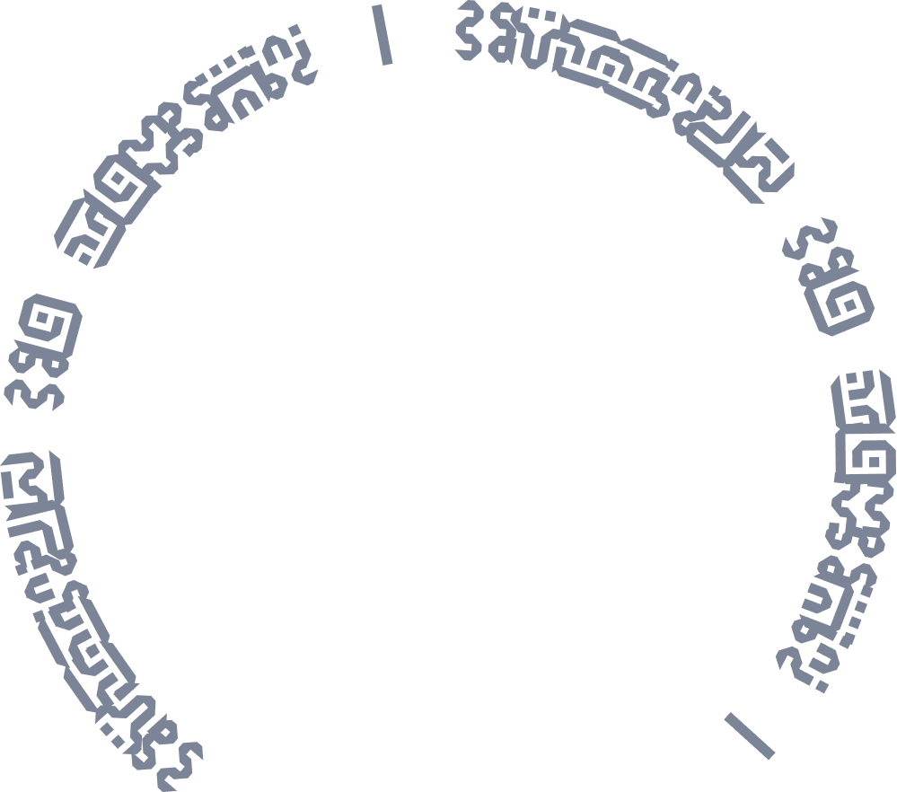

Base de données non officielle
Guide Non-Officiel des Zelda 3D
Quarts de cœurs, bouteilles et Grandes fées… Maintenant plus besoin de fouiner ! Rendez-vous sur le wiki de Nele.

Comment ça marche ?
1
Choisit le jeux sur lequel tu bloques !
2
Besoins des Quarts de cœurs ? Des bouteilles ? Ou bien tu recherches une grande fée ? À toi de faire ton choix !
3
Tu es perdu à cause du nombre de check ? Dans ce cas connecte ton Discord et remplis la checklist de chaque jeux !


Base de données à télécharger
Toutes les données de ce site sont ouvertes et téléchargeables, par catégorie ou en un seul fichier, dans le format de votre choix.
Ocarina of Time
36 quarts de cœur · 4 bouteilles · 6 Grandes Fées.
The Wind Waker
44 quarts de cœur · 4 bouteilles · 8 améliorations de Grandes Fées.